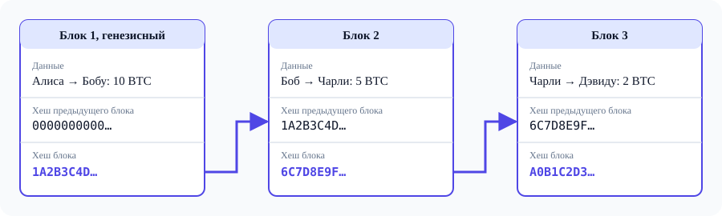
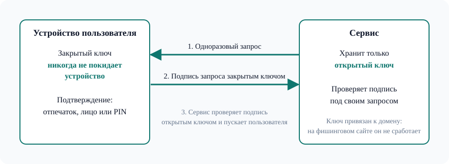
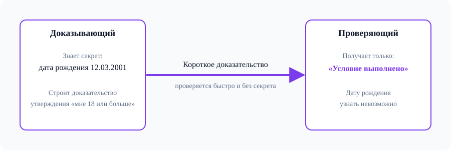

Содержание
- Введение: сеть, которой доверяют все, а проверяют единицы
- Web 3.0: идея и реальность
- Блокчейн: устройство доверия
- Безопасность и приватность
- Практические кейсы
- Исследования и экспертные статьи
- Глоссарий
- Вопросы и ответы
- Проверьте себя
- Выводы
- Источники
Подсказка: при наведении на пунктирные термины появляются определения, а у каждого заголовка есть ссылка-якорь # для быстрого цитирования.
1. Введение: сеть, которой доверяют все, а проверяют единицы
Каждый раз, когда вы оплачиваете покупку в приложении, входите в личный кабинет или отправляете документ, вы полагаетесь на незнакомую организацию: она не исказит запись, не потеряет данные и не передаст их третьим лицам. Этот лонгрид о том, можно ли сделать такое доверие проверяемым.
1.1 Сеть для шести миллиардов
К концу 2025 года интернетом пользовались около 6 млрд человек, то есть примерно три четверти населения планеты. За год аудитория выросла более чем на 240 млн человек, а сети 5G охватили около 55% людей [1]. Неравенство при этом остается резким: в странах с высоким доходом интернетом пользуются 94% жителей, в странах с низким доходом лишь 23%.
Технологически последние годы определяют облачные платформы, машинное обучение и рост числа подключенных устройств. Социально это означает зависимость от нескольких крупных платформ: они устанавливают правила, хранят данные и решают, кому и как разрешен доступ. Вместе с этой зависимостью растет число утечек. На этом фоне оформились три связанные идеи: цифровая экономика, Индустрия 4.0 и Web 3.0.
Что происходит с доверием, когда критически важные процессы переезжают в сеть, и могут ли технологии Web 3.0 сделать это доверие проверяемым, а не вынужденным?
1.2 Цифровая экономика и Индустрия 4.0
В Стратегии развития информационного общества на 2017-2030 годы цифровая экономика определена как хозяйственная деятельность, в которой ключевым фактором производства выступают данные в цифровой форме [2]. Программа «Цифровая экономика Российской Федерации», утвержденная распоряжением Правительства № 1632-р в 2017 году, задала направления развития регулирования, кадров, инфраструктуры и информационной безопасности [3], а ее продолжением стал национальный проект «Экономика данных и цифровая трансформация государства», стартовавший в 2025 году. Интернет-технологии служат инфраструктурой цифровизации платежей, медицины, госуслуг и производства, поэтому чем больше критически важных процессов переносится в сеть, тем выше цена ошибки в вопросах доверия и защиты данных.
Инициатива Industrie 4.0 была представлена в Германии в 2011 году, а в 2013 году рабочая группа под руководством Каггермана опубликовала рекомендации по ее реализации [4]. Физические производственные процессы объединяются с цифровыми через киберфизические системы: станки, датчики и программные модели обмениваются данными в реальном времени и согласуют действия без постоянного участия человека. К перспективным технологиям этой области относят промышленный интернет вещей, граничные вычисления, цифровые двойники, облачные платформы и искусственный интеллект.
Когда в цепочке поставок участвуют независимые компании, общий неизменяемый журнал событий позволяет проверять происхождение продукции без доверенного посредника. Ритейлер Walmart вместе с IBM проверил это на нарезанных манго: найти ферму вручную удавалось почти за семь дней, а в системе на блокчейне Hyperledger Fabric за 2,2 секунды [5]. Подробности в разделе «Практические кейсы».
1.3 Доверие как инженерная проблема
В повседневной жизни мы почти не замечаем, сколько посредников стоит между нами и результатом. Банк подтверждает, что деньги списаны, облачный сервис хранит документы, маркетплейс удерживает оплату до получения товара, оператор связи знает, с кем и когда мы общались. Каждый из них является доверенной третьей стороной, и каждому приходится верить на слово. Криптограф Ник Сабо еще в начале 2000-х годов сформулировал эту мысль жестко: доверенные третьи стороны являются дырами в безопасности [6]. Речь не о том, что посредники плохие. Речь о том, что их ошибка, взлом или недобросовестность ставят под угрозу всех, кто на них положился.
Инженерный подход к доверию состоит в том, чтобы превратить его из веры в проверку. Мы не просим клиента поверить, что бухгалтерская книга не подделана, а даем ему возможность убедиться в этом самому. Для этого нужны три свойства: открытые правила, которые одинаково применяются ко всем; данные, изменение которых заметно; и участники, которым не нужно знать друг друга лично. Именно такой набор свойств стремится обеспечить блокчейн, и именно поэтому разговор о Web 3.0 невозможно вести без разговора о защите информации.
2. Web 3.0: идея и реальность
2.1 Два смысла одного термина
Термин Web 3.0 используют по меньшей мере в двух смыслах. Первый восходит к идее семантической паутины Бернерса-Ли: данные в сети должны быть описаны так, чтобы их мог обработать не только человек, но и программа [7]. Второй появился в 2014 году, когда Гэвин Вуд предложил так называть сеть, в которой роль доверенного посредника берут на себя криптографические протоколы и децентрализованные приложения [8]. Именно эта трактовка принята в лонгриде.
Web 1.0: читать
Сеть документов, которые пользователь только читает.
Web 2.0: читать и писать
Социальные сети и облачные сервисы, но данные и логика сосредоточены у владельцев платформ.
Web 3.0: читать, писать и владеть
Пользователь владеет учетной записью, активами и данными, а правила закреплены в открытом коде, исполняемом сетью независимых узлов.
2.2 Семнадцать трендов в четырех группах
Методические указания к курсу называют семнадцать трендов Web 3.0. По роли в архитектуре их удобно сгруппировать в четыре направления.
Инфраструктура и вычисления
облачные вычисленияграничные вычислениядецентрализованные сетидецентрализованное хранениеIoT и IoEДецентрализованная логика и экономика
блокчейнDAppsDeFiDAOтокенизацияe-commerceкриптовалютыДанные и интеллект
ИИ и машинное обучениесемантическая паутинаоткрытый кодвладение даннымиИнтерфейсы и среда
метавселенные3DVR, AR, MRБлокчейн образует техническую основу второй группы: приложения, финансовые протоколы, автономные организации и токены существуют потому, что есть среда, где общее состояние можно менять по прозрачным правилам без центрального администратора. На него опирается и децентрализованное хранение из первой группы, поэтому дальше мы разбираем именно блокчейн.
2.3 Состояние на 2026 год и критика
Состояние развития неоднозначно. С одной стороны, появились рабочая инфраструктура, платформы смарт-контрактов и массовый рынок стейблкоинов, а регуляторы переходят от запретов к правилам: в Европейском союзе действует регламент MiCA [9], а в России Федеральный закон от 31.07.2020 № 259-ФЗ определил правовой режим цифровых финансовых активов и цифровой валюты [10]. По данным Банка России, объем выпусков цифровых финансовых активов вырос с 64 млрд рублей в 2023 году до 594 млрд в 2024 году и 1,65 трлн в 2025 году [11].
С другой стороны, большинство пользователей обращается к блокчейнам через небольшое число провайдеров доступа к узлам и централизованных веб-интерфейсов, то есть децентрализация протокола не гарантирует децентрализации сервиса. Эту проблему подробно разобрал разработчик Мокси Марлинспайк [12].
В разделе о безопасности оно объясняет, почему крупнейшие атаки направлены не на протокол, а на интерфейс, облачную инфраструктуру и учетные данные.
2.4 Web 2.0 и Web 3.0 в сравнении
Сравнение удобно начать с вопроса, где в каждой модели находится «точка опоры» доверия и что происходит, когда она подводит.
| Аспект | Web 2.0 | Web 3.0 (децентрализованное прочтение) |
|---|---|---|
| Идентификация | Учетная запись у провайдера | Ключевая пара и децентрализованные идентификаторы |
| Данные | На серверах платформы | У пользователя или в распределенных хранилищах |
| Платежи | Банки и платежные системы | Токены и смарт-контракты |
| Правила | Условия сервиса, которые владелец меняет сам | Открытый код и голосование владельцев токенов |
| Типичная точка отказа | Сервер или аккаунт платформы | Закрытый ключ, интерфейс, смарт-контракт |
| Восстановление доступа | Через службу поддержки | Через резервную копию ключа или социальное восстановление |
| Ответственность за ошибку | Платформа и закон о защите потребителей | Чаще всего сам пользователь |
Таблица показывает не «плохое против хорошего», а перенос рисков. Web 3.0 убирает одни точки отказа и создает другие, а пользователь получает больше контроля вместе с большей ответственностью. Поэтому технологии защиты в этой модели оказываются не дополнением, а частью самой архитектуры.
2.5 Хронология
Бернерс-Ли, Хендлер и Ласила описывают семантическую паутину.
Накамото публикует описание Bitcoin, запускается сеть с генезисным блоком.
Вуд предлагает термин Web 3.0 для децентрализованной сети, запускается Ethereum со смарт-контрактами.
В России принимаются Стратегия информационного общества и программа «Цифровая экономика».
15 сентября Ethereum переходит на Proof-of-Stake, в России появляются первые операторы цифровых финансовых активов.
NIST утверждает первые постквантовые стандарты FIPS 203, 204 и 205.
Февраль: кража у Bybit. Май: W3C принимает Verifiable Credentials 2.0. Июль: выходит NIST SP 800-63-4 с ключами доступа.
7 июля EDPB принимает версию 2.0 руководства о персональных данных в блокчейне.
3. Блокчейн: устройство доверия
3.1 Зачем нужен блокчейн
Платежи и учет в интернете традиционно строятся на доверенной третьей стороне: банке, платежной системе, сервере сервиса. У такой схемы три недостатка. Центральный узел является единой точкой отказа: его сбой, взлом или закрытие лишают участников доступа к средствам и данным. Посредник берет комиссию и вносит задержку. Наконец, участники вынуждены верить, что организация не исказит записи, не заморозит счет и не передаст данные третьим лицам.
Для цифровых денег добавляется задача двойного расходования: актив нельзя копировать, как файл, поэтому сеть без центра должна прийти к единому мнению о порядке операций. Решение предложил Сатоси Накамото в 2008 году [13]. Блокчейн можно определить как распределенный реестр, который хранится у множества независимых узлов, не имеет единого администратора и допускает лишь добавление записей, причем изменить записанное практически невозможно [14].
3.2 Две идеи криптографии
Технология держится на двух криптографических примитивах. Первый из них хеш-функция: SHA-256, которую использует Bitcoin, принимает данные произвольной длины и возвращает значение длиной 256 бит. Функция детерминирована, не позволяет восстановить исходные данные иначе чем полным перебором и обладает лавинным эффектом [13]. Проверьте это сами.
Введите любой текст. Ниже показан SHA-256 вашего текста и того же текста с точкой в конце. Отличающиеся символы выделены.
Второй примитив составляют асимметричная криптография и цифровая подпись: закрытый ключ хранится в тайне и нужен для подписи, открытый известен всем, а подпись привязана к конкретному сообщению и проверяется любым. Так в сети без центра решается задача авторизации: перевести актив может только владелец закрытого ключа, а ключевая пара становится идентификатором участника. В России те же задачи решают хеш-функция «Стрибог» по ГОСТ 34.11-2018 и электронная подпись по ГОСТ 34.10-2018 [15].
3.3 Цепочка блоков: попробуйте сломать
Транзакции объединяются в блоки. Блок содержит набор транзакций, метку времени, значение nonce и хеш предыдущего блока. В Bitcoin транзакции представлены в заголовке корнем дерева Меркла, а для вычисления хеша применяется двойное SHA-256 [13, 16]. Первый, генезисный блок предыдущего не имеет.

Если злоумышленник исправит данные во втором блоке, изменится его хеш, ссылка в третьем блоке перестанет совпадать, и недействительными окажутся все последующие блоки. Но современный компьютер пересчитает цепочку мгновенно, поэтому защиту обеспечивает механизм консенсуса, который делает пересчет дорогим. Попробуйте в песочнице ниже.
Считаем начальную цепочку…
Что делать: 1) измените текст в любом блоке и посмотрите, как краснеет цепочка; 2) нажмите «Майнить» у блока: он снова станет действительным, но следующий хранит старый хеш; 3) нажмите «Пересчитать всю цепочку» при сложности 1 и 4 и сравните число попыток.
Различаются и модели учета: в Bitcoin баланс складывается из непотраченных выходов прежних транзакций [16], а в Ethereum в общем состоянии записаны баланс каждого адреса и состояние смарт-контрактов [17]. Если хочется увидеть все то же самое в виде короткого фильма, посмотрите разбор от 3Blue1Brown.
3.4 Консенсус: работа против залога
Консенсус определяет, кто и по каким правилам добавляет следующий блок. В Bitcoin применяется Proof-of-Work: блок допустим, если его хеш меньше заданного целевого значения, то есть начинается с достаточного числа нулевых бит. Результат SHA-256 предсказать нельзя, поэтому майнеры перебирают значение nonce миллиарды раз, а проверка найденного решения требует одного вычисления хеша [13]. Сложность пересчитывается каждые 2016 блоков, чтобы блок находился в среднем раз в десять минут [16]. Майнер получает вознаграждение и комиссии, что дает стимул работать честно. При одновременном нахождении блока сеть временно ветвится, а узлы выбирают цепочку с наибольшей накопленной работой.
Выбор цепочки с наибольшей накопленной работой нередко пересказывают как «правило 51%», но число 51% описывает порог атаки, а не правило консенсуса. Чтобы переписать историю, злоумышленнику нужно контролировать большую часть вычислительной мощности сети, а не большинство компьютеров, и для крупной сети такая атака чрезвычайно дорога.
Proof-of-Stake заменяет затраты электроэнергии залогом. Валидаторы блокируют собственные монеты, вероятность выбора для создания блока зависит от размера залога, а за нарушение правил залог частично или полностью сгорает, что называют слэшингом. В Ethereum переход на этот механизм завершился 15 сентября 2022 года и снизил энергопотребление сети примерно на 99,95% [18]. Финализация блока требует подтверждения валидаторов, совокупно держащих не менее двух третей залога [19], поэтому порог атаки здесь определяется иначе, чем в PoW.
Proof-of-Work: безопасность за счет работы
Энергопотребление, условная шкала:
Proof-of-Stake: безопасность за счет залога
Энергопотребление Ethereum после перехода, условная шкала (примерно 0,05% от прежнего):
Модель упрощена и служит иллюстрацией порогов, а не прогнозом реальных атак.
| Критерий | Proof-of-Work | Proof-of-Stake |
|---|---|---|
| Ресурс, обеспечивающий безопасность | Вычислительная работа и электроэнергия | Заблокированные в залог монеты |
| Энергопотребление | Высокое | Ниже примерно на 99,95% в Ethereum |
| Необратимость записи | Вероятностная, растет с числом блоков | Явная финализация голосованием валидаторов |
| Порог входа | Специализированное оборудование | Сумма залога |
3.5 Путь транзакции от кошелька до необратимости
Чтобы понять, где в блокчейне может возникнуть проблема безопасности, полезно проследить жизнь одной транзакции от нажатия кнопки до появления в реестре.
- Создание. Кошелек формирует транзакцию: получатель, сумма, комиссия и служебные данные.
- Подпись. Закрытый ключ подписывает транзакцию. Без ключа подпись не создать, а проверить ее может любой с помощью открытого ключа.
- Рассылка. Транзакция передается узлам и попадает в очередь неподтвержденных операций.
- Отбор. Майнер или валидатор собирает блок, обычно отдавая приоритет операциям с более высокой комиссией. В Ethereum комиссия называется газом и зависит от сложности операции и загрузки сети.
- Проверка. Узлы независимо проверяют подпись, наличие средств и отсутствие двойного расходования.
- Подтверждение. Блок добавляется в цепочку, и каждый следующий блок повышает уверенность, что запись не будет отменена. В Ethereum блок становится финализированным после голосования валидаторов.
- Необратимость. Исправить ошибку может только новая транзакция, согласия получателя при этом никто не требует.
Две особенности этого пути объясняют многие проблемы безопасности. Во-первых, подписанную транзакцию нельзя отозвать, поэтому цена одной ошибочной подписи равна сумме, к которой она дает доступ. Во-вторых, пользователь подписывает то, что показывает интерфейс. Если интерфейс лжет, криптография честно подтверждает ложь, как это произошло в кейсе Bybit.
3.6 Типы сетей и смарт-контракты
По условиям доступа блокчейны делят на три типа.
Публичные
Читать данные, отправлять транзакции и запускать узел может любой желающий. Примеры: Bitcoin и Ethereum.
Приватные
Доступ контролирует одна организация, поэтому такие сети подходят для внутреннего учета с известными участниками.
Консорциумные
Сетью управляет группа независимых организаций. Так устроен, например, пилот Walmart на Hyperledger Fabric.
Чем закрытее сеть, тем проще обеспечить производительность и соответствие требованиям регуляторов, но тем слабее идея отказа от доверенного администратора. Различие важно и для приватности: европейские регуляторы рекомендуют рассматривать закрытые сети там, где в реестре есть персональные данные [20].
Ethereum расширил идею реестра до платформы исполнения программ [17]. Смарт-контракт представляет собой программу, записанную в блокчейн и одинаково исполняемую всеми узлами при наступлении заданных условий. Результат нельзя подменить без согласия сети, но и ошибку в коде после развертывания обычно нельзя исправить, поэтому ответственность за корректность переходит от учреждения к разработчику и аудитору. Контракты не видят внешний мир, и данные о событиях им поставляют оракулы. На этом строятся децентрализованное кредитование под залог цифровых активов и параметрическое страхование, где выплата за задержку рейса срабатывает автоматически по данным внешнего источника, а также децентрализованные приложения, финансы и автономные организации из перечня трендов.
3.7 Масштабируемость и ограничения
Главное ограничение публичных блокчейнов связано с пропускной способностью. По распространенным оценкам, Bitcoin обрабатывает порядка семи транзакций в секунду, а Ethereum на базовом уровне десятки, тогда как централизованные платежные системы работают на порядки быстрее. Это принято описывать как трилемму блокчейна, которую обычно приписывают Виталику Бутерину: сеть трудно сделать одновременно децентрализованной, безопасной и масштабируемой, хотя это скорее эвристика, чем доказанная теорема.
Практическим ответом стали решения второго уровня: rollup выполняет тысячи транзакций вне основной цепи и публикует в блокчейне данные вместе с доказательством корректности, наследуя безопасность базового уровня [21]. Нерешенными остаются энергопотребление сетей на PoW, правовая неопределенность статуса цифровых активов и необратимость ошибок в контрактах.
3.8 Чего блокчейн не умеет и когда он не нужен
Вокруг технологии накопилось много упрощений, и часть ошибок безопасности растет именно из них.
- «Блокчейн и криптовалюта это одно и то же». Криптовалюта лишь одно из приложений. Реестр можно использовать для логистики, учета прав и журналов аудита.
- «Блокчейн анонимен». В публичных сетях адреса псевдонимны, а история операций открыта всем и поддается анализу.
- «Блокчейн нельзя взломать». Протокол крупных сетей устойчив, но взламывают кошельки, интерфейсы, смарт-контракты и учетные данные.
- «Данные в блокчейне всегда правдивы». Реестр гарантирует, что запись не менялась, но не гарантирует, что она была верной в момент записи. Эту проблему называют проблемой оракула.
- «Блокчейн заменит базы данных». Для большинства задач обычная база данных быстрее, дешевле и проще в сопровождении.
Выбирать технологию стоит по задаче, а не наоборот. Исследователи Карл Вюст и Артур Гервайс предложили оценивать целесообразность блокчейна последовательностью простых вопросов о хранении данных, числе участников и доверии между ними [22]. Ниже упрощенная версия такой схемы.
Схема упрощена: она отсеивает очевидные случаи, но не заменяет анализ архитектуры.
Если схема привела к обычной базе данных, это не поражение технологии. Хороший инженер подбирает инструмент под задачу, а не задачу под модный инструмент.
Блокчейн дает Web 3.0 то, чего не было в Web 2.0: общий реестр, правила которого каждый участник проверяет самостоятельно. Но технология гарантирует целостность и порядок записей, а не их конфиденциальность и не безопасность интерфейсов, через которые с ней работают люди. Этим вопросам посвящен следующий раздел.
4. Безопасность и приватность в мире Web 3.0
4.1 Термины и модель угроз
Безопасность
Защита конфиденциальности, целостности и доступности информации.
Приватность
Право контролировать сведения о себе: скрыто содержание действий, личность может быть известна.
Анонимность
Скрыта личность, а само действие остается видимым.
Псевдонимность
Действия связаны с постоянным идентификатором, который не раскрывает человека напрямую. Так устроены адреса в публичных блокчейнах.
Выбор средств защиты определяет модель угроз: что защищается, от кого и какой ценой. Собирать данные могут платформы, операторы связи и государственные органы. Правовую рамку в России задает Федеральный закон № 152-ФЗ [23], в Европейском союзе регламент GDPR [24]. В Web 3.0 модель угроз смещается: владение закрытым ключом заменяет учетную запись у провайдера, и вместе с контролем пользователь получает всю ответственность за его сохранность, поскольку восстановить доступ через службу поддержки обычно нельзя.
4.2 Где ломают на самом деле
Исходная проблема, на которую отвечает Web 3.0, связана с централизованным хранением данных: учетные записи и персональные сведения накапливаются на серверах платформ, поэтому одна утечка раскрывает данные миллионов людей, а пользователь не контролирует их хранение и повторное использование. К этому добавляется сбор метаданных, например по отпечаткам браузеров. Узнать, насколько уникален именно ваш браузер, можно на странице Cover Your Tracks организации EFF.
Но чаще нарушается не криптография, а окружение. По данным отчета Verizon за 2025 год, человеческий фактор присутствовал в 60% подтвержденных утечек, а украденные учетные данные оказались самым частым способом первоначального доступа и использовались в 22% случаев [25].
Человеческий фактор в подтвержденных утечках 60%
Украденные учетные данные как первоначальный доступ 22%
Для Web 3.0 вывод принципиален: если главный вектор атак находится на стороне учетных данных и интерфейсов, надежная криптография реестра сама по себе безопасность не обеспечивает. Масштаб потерь при этом растет. По оценке Chainalysis, в 2025 году из криптоактивов украдено более 3,4 млрд долларов, а доля краж у частных кошельков выросла с 7,3% в 2022 году до 44% в 2024 году [26]. По данным Blockaid, в первом полугодии 2026 года зафиксировано 212 эксплойтов с ущербом около 1,1 млрд долларов [27].
4.3 Как атакуют пользователя Web 3.0
Крупные инциденты заметны, но повседневные потери складываются из массовых атак на частных пользователей. Их механика повторяется.
- Фишинг подписи. Человека заманивают на поддельный сайт и предлагают подписать сообщение или транзакцию, которая дает атакующему права на активы. Подпись выглядит как рутинное подтверждение.
- Вредоносные разрешения. Для работы приложения пользователь выдает ему право распоряжаться токенами. Если разрешение не ограничено и не отозвано, злоумышленник списывает активы без нового подтверждения.
- Подмена интерфейса и домена. Захват DNS-записи, поддельная ссылка в рекламе или мессенджере, вредоносное расширение браузера: человек видит привычную страницу, которая делает не то, что обещает.
- Кража seed-фразы. Резервная фраза восстанавливает все ключи кошелька, поэтому ее кража равна краже всех активов. Мошенники под видом «службы поддержки» просят ввести ее для «проверки».
- Атаки на цепочку поставок. Вредоносный пакет в зависимостях, взломанный компьютер разработчика, подмененное обновление: так начался и инцидент Bybit.
- Социальная инженерия с ИИ. Дипфейки голоса и видео, правдоподобные письма и сообщения, подделка знакомого собеседника.
Общая черта этих атак в том, что ни одна не ломает математику. Все они используют доверие человека к тому, что он видит на экране, поэтому защита строится вокруг привычки проверять, а не вокруг веры в технологию. Перед подписью стоит пройти короткий порядок действий.
- Адрес сайта введен вручную или открыт из закладки, а не из сообщения.
- Адрес получателя и сумма на экране аппаратного кошелька совпадают с ожидаемыми.
- Запрашиваемое разрешение ограничено по сумме и сроку.
- Сообщение для подписи понятно. Если непонятно, его не подписывают.
- Для крупной суммы сначала отправляют тестовую транзакцию.
4.4 Кейс Bybit: взломали не контракт, а интерфейс
Аудиторы смарт-контрактов сосредоточены на коде контракта, тогда как реальные атаки нередко проходят на стыке Web2 и Web3: подмена DNS-записи или захват домена приложения заставляет пользователя подписать транзакцию, передающую права на его активы. Показателен инцидент Bybit, развернувшийся 21 февраля 2025 года.
- Злоумышленники скомпрометировали компьютер разработчика Safe{Wallet} и получили доступ к облачной инфраструктуре, где лежал код веб-интерфейса [28].
- За два дня до атаки они изменили JavaScript-код, который срабатывал только при работе с кошельком Bybit [28].
- Во время обычного перевода средств из холодного кошелька в горячий подписанты Bybit увидели привычный интерфейс, но одобрили замаскированную вредоносную транзакцию.
- На адреса атакующих ушло порядка 1,5 млрд долларов в эфире. Через две минуты после транзакции злоумышленники вернули в хранилище чистую версию кода, чтобы замести следы [29].
Независимая проверка не нашла уязвимостей в смарт-контрактах Safe. Безопасность системы определяется ее слабейшим звеном, и оно редко находится в самом протоколе. Технический разбор есть у SlowMist, а на русском языке история изложена на SecurityLab.
4.5 Приватность реестра и закон
Отдельная проблема состоит в приватности самого реестра. Адреса в публичном блокчейне псевдонимны, но история операций открыта всем, а методы кластеризации адресов позволяют связывать их с реальными участниками и сервисами. Кроме того, неизменяемость противоречит праву на исправление и удаление данных по статьям 16 и 17 GDPR. Руководство EDPB 02/2025, версия 2.0 которого принята 7 июля 2026 года, настоятельно рекомендует хранить персональные данные вне цепочки, оставляя в блоках только хеши и криптографические обязательства [20].
На цепочке
Хеш и криптографическое обязательство: подтверждают, что данные существовали и не менялись.
Вне цепочки
Сами персональные данные: их можно исправить или удалить по требованию человека.
Часто предлагают простой выход: записать в блокчейн не данные, а их хеш. Это полезное, но не универсальное решение. Если исходные данные принимают мало значений, например дата рождения или номер из ограниченного диапазона, хеш можно подобрать перебором всех вариантов, и тогда он фактически раскрывает данные. Поэтому в реестр кладут не голые хеши, а криптографические обязательства с добавлением случайного значения, которое хранится вне цепочки. Кроме того, по логике GDPR псевдонимизированные данные остаются персональными, пока существует возможность восстановить связь с человеком. Надежнее всего вообще не помещать в публичный реестр ничего, что относится к человеку.
4.6 Средства защиты в Web 3.0
Защита ключей. Самостоятельное хранение закрытого ключа переносит риск на пользователя, поэтому ключи держат в аппаратных кошельках, где подпись создается внутри устройства, а единую точку отказа снижают мультиподписи, требующие согласия нескольких держателей, и схемы с распределенным хранением ключа. Но случай Bybit показал, что и мультиподпись бесполезна, если участники подписывают то, что показывает скомпрометированный интерфейс, поэтому содержимое транзакции нужно проверять независимо от него, например по хешу на экране аппаратного устройства.
Защита кода и интерфейсов. Смарт-контракт нельзя исправить после развертывания, поэтому перед запуском его проверяют независимым аудитом и формальной верификацией, а интерфейс размещают в децентрализованных хранилищах вроде IPFS и Arweave, где адрес файла вычисляется от его содержимого и подмена файла меняет адрес.
Приватность. Сквозное шифрование в децентрализованных мессенджерах, таких как Session и Matrix, убирает единый сервер, хранящий переписку, а Tor остается прототипом анонимизирующих сетей. В нем соединение проходит через три узла, и ни один из них не знает одновременно отправителя и получателя [30], но система не защищает от противника, способного наблюдать оба конца соединения и сопоставлять трафик. Сравните это с VPN.
4.7 Личный минимум безопасности
Технологии из следующего пункта еще предстоит внедрить, а защититься можно уже сегодня. Небольшой набор привычек закрывает значительную часть описанных выше атак. Отметьте, что из этого вы уже делаете, и индикатор покажет слабое место. Отметки сохраняются только в вашем браузере.
Первые два пункта дают наибольший эффект, потому что учетные данные остаются главным вектором атак. Остальные закрывают специфичные риски Web 3.0: ключи, подписи и разрешения. Ни один пункт не требует специальных знаний, но все требуют дисциплины, и именно она во многом определяет, станет ли человек жертвой.
4.8 Технологии, которые определят область
Средства из предыдущего пункта снижают риски существующей архитектуры, но не устраняют их причин, поэтому развитие области определят технологии, меняющие саму архитектуру. Выявленные проблемы образуют четыре зоны: учетные данные и человеческий фактор, противоречие между прозрачностью реестра и приватностью, долговечность криптографических допущений и рост возможностей атакующих за счет искусственного интеллекта. Технологии отбирались по масштабу устраняемой угрозы, зрелости решения, связи с трендами Web 3.0 и реалистичности массового внедрения.
Беспарольная аутентификация: FIDO2 и ключи доступа
Закрытый ключ создается и хранится на устройстве пользователя, не передается сервису и привязан к его домену, поэтому фишинг и повторное использование паролей теряют смысл. Редакция NIST SP 800-63-4 от июля 2025 года включила синхронизируемые ключи доступа в число допустимых аутентификаторов [31]. В Web 3.0 смарт-кошельки позволяют заменить seed-фразу ключом доступа. Подробнее о стандарте можно узнать на странице FIDO Alliance.

Зрелость: высокая. Ограничения: привязка к устройствам и экосистемам, сложное восстановление доступа.
Доказательства с нулевым разглашением
Они позволяют подтвердить факт, например возраст или платежеспособность, не раскрывая сами данные. В блокчейнах такие доказательства уже применяются для конфиденциальных транзакций [32] и в rollup-решениях, где одно короткое доказательство подтверждает корректность тысяч операций. Это снимает главный конфликт области: открытость реестра против конфиденциальности данных. Введение для разработчиков есть на ethereum.org.

Зрелость: средняя. Ограничения: стоимость вычислений, сложность разработки и аудита, риск ошибок в схемах.
Децентрализованные идентификаторы и верифицируемые учетные данные
Спецификация W3C Verifiable Credentials 2.0, принятая как рекомендация в мае 2025 года, позволяет эмитенту выдать подписанное удостоверение, а владельцу раскрывать проверяющему только нужные поля [33]. Такой подход соответствует принципу минимизации данных и снимает необходимость хранить их в централизованных базах.
Зрелость: средняя, стандарт принят в 2025 году. Ограничения: необходимость доверия к эмитентам, вопросы отзыва и восстановления.
Постквантовая криптография
Подписи ECDSA, на которых держатся ключевые пары Bitcoin и Ethereum, уязвимы для достаточно мощного квантового компьютера, а зашифрованный трафик можно записывать сегодня и вскрыть позже. NIST утвердил в августе 2024 года стандарты FIPS 203, 204 и 205 [34], поэтому миграция перестала быть теоретической задачей. Для публичных блокчейнов она сложнее, чем для обычных сервисов: смена алгоритма требует согласия сообщества и обновления клиентов, а уже опубликованные открытые ключи изменить задним числом нельзя.
Зрелость: стандарты утверждены, миграция начинается. Ограничения: большие ключи и подписи, сложный переход действующих сетей.
Искусственный интеллект: усилитель обеих сторон
Искусственный интеллект не решает проблему, а меняет баланс сил. Генеративные модели удешевляют фишинг и подделку голоса и видео: в 2024 году сотрудник гонконгского офиса компании Arup перевел мошенникам около 25,6 млн долларов после видеозвонка, на котором все участники, включая финансового директора, оказались дипфейками [35]. Одновременно модели применяют для обнаружения аномалий и поиска уязвимостей, но они не заменяют архитектурных мер.
Зрелость: высокая, но быстро меняется. Ограничения: не устраняет причин уязвимостей, подвержен манипуляциям и ошибкам.
Ранжирование по влиянию на область
Ключи доступа
Зрелы и устраняют самый частый вектор атак.
Нулевое разглашение и децентрализованная идентификация
Определят архитектуру приватности Web 3.0.
Постквантовая криптография
Менее заметна, но неизбежна.
Искусственный интеллект
Быстро обесценивает меры, не опирающиеся на архитектуру.
Если ранжировать технологии по влиянию на развитие области, наибольший эффект в краткосрочной перспективе даст беспарольная аутентификация: она зрела и устраняет самый частый вектор атак. В долгосрочной перспективе архитектуру приватности Web 3.0 определят доказательства с нулевым разглашением и децентрализованная идентификация, потому что они разрешают противоречие между открытостью реестра, необходимой для доверия, и конфиденциальностью данных, необходимой пользователям и закону. Постквантовая криптография менее заметна, но неизбежна и задает сроки перестройки фундамента остальных решений.
Сроки внедрения этих технологий уже не абстрактны. Проект документа NIST IR 8547, опубликованный в ноябре 2024 года, предлагает признать RSA и эллиптические кривые устаревшими после 2030 года и запретить их после 2035 года [36]. Это короткое окно для систем, которые меняются медленно, а для блокчейнов с их коллективным управлением тем более. В Европейском союзе Регламент 2024/1183 обязывает государства предложить гражданам цифровые кошельки идентификации к концу 2026 года, при этом пользоваться ими добровольно [37]. Это пример того, как идеи верифицируемых удостоверений и минимизации данных переходят из спецификаций в массовые государственные сервисы.
Практический вывод для проектировщика состоит в том, что системы идентификации и хранения данных стоит строить так, чтобы они раскрывали минимум сведений и допускали смену криптографических алгоритмов. Границы прогнозов при этом нужно помнить: сроки в проекте стандарта могут измениться, а государственные программы разворачиваются неравномерно.
5. Практические кейсы
Пять историй показывают, как идеи из лонгрида работают и ломаются на практике. У каждого кейса есть ссылка на первоисточник или подробный разбор.
5.1 Уроки из кейсов
Эти истории разные по масштабу, но в них повторяются одни и те же выводы.
Интерфейсу нельзя доверять слепо. В Bybit подписанты видели обычный экран и одобрили вредоносную транзакцию, в Arup сотрудник видел на экране знакомых коллег. В обоих случаях защита опиралась на то, что глаза не обманывают. Теперь они обманывают, поэтому нужен второй канал проверки: независимое отображение транзакции на аппаратном устройстве или подтверждение платежа по заранее известному номеру.
У технологии есть границы применимости. Walmart получил выигрыш в скорости не потому, что блокчейн лучше базы данных, а потому, что у независимых поставщиков появился общий журнал, которому можно доверять без единого владельца. Эффект возник там, где участников много и они не подчинены одному центру. Там, где центр есть, обычная база остается разумным выбором, о чем говорится в разделе 3.8.
Правовая рамка важна не меньше кода. Российский рынок цифровых финансовых активов вырос более чем в двадцать раз с 2023 по 2025 год, и произошло это на фоне закона и реестра операторов, которые появились раньше больших объемов. Технология без правовой рамки остается экспериментом, а с ней становится инфраструктурой.
Фундаментальные изменения возможны, но дорого стоят. Переход Ethereum на Proof-of-Stake показал, что принципиальную характеристику живой сети с огромной стоимостью активов можно изменить без остановки, но только после долгой подготовки и при согласии сообщества. Для постквантовой миграции это одновременно обнадеживает и предупреждает: времени понадобится много.
6. Исследования и экспертные статьи
Подборка для тех, кто хочет углубиться. Мы собрали первоисточники, отчеты и мнения практиков.
Исследования и отчеты
Экспертные статьи
Инструменты для самопроверки
7. Глоссарий
Короткие определения терминов из лонгрида. Начните вводить слово, и список отфильтруется.
- Блок
- Набор транзакций с метаданными, который добавляется в цепочку целиком.
- Валидатор
- Участник сети Proof-of-Stake, который вносит залог и подтверждает блоки.
- Двойное расходование
- Попытка потратить один и тот же цифровой актив дважды.
- Дипфейк
- Реалистичная подделка лица или голоса, созданная нейросетью.
- Закрытый ключ
- Секретное число, которым создается цифровая подпись. Его владелец распоряжается активами.
- Ключ доступа
- Учетные данные на основе пары ключей, привязанные к устройству и домену сервиса. По-английски passkey.
- Консенсус
- Правила, по которым независимые узлы договариваются об единой версии реестра.
- Майнинг
- Поиск допустимого блока в сети Proof-of-Work за вознаграждение.
- Метаданные
- Данные о данных: время, адреса, размер, тип устройства. Нередко раскрывают больше, чем само содержание.
- Nonce
- Число, которое подбирается, чтобы хеш блока удовлетворил условию сложности.
- Оракул
- Сервис, передающий смарт-контракту данные из внешнего мира.
- Приватность
- Право контролировать сведения о себе.
- Псевдонимность
- Связь действий с постоянным идентификатором, который не раскрывает личность напрямую.
- Seed-фраза
- Набор слов, из которого восстанавливаются все ключи кошелька. Его потеря или кража равна потере активов.
- Слэшинг
- Уничтожение части залога валидатора за нарушение правил.
- Смарт-контракт
- Программа в блокчейне, которую одинаково исполняют все узлы при выполнении заданных условий.
- Транзакция
- Подписанная операция, изменяющая состояние реестра.
- Узел
- Компьютер, хранящий копию реестра и проверяющий транзакции.
- Фишинг
- Обман, целью которого служит получение данных или подписи под видом настоящего сервиса.
- Хеш-функция
- Алгоритм, превращающий данные в короткий отпечаток фиксированной длины.
- Цифровая подпись
- Значение, доказывающее, что сообщение создано владельцем ключа и не изменено.
- Rollup
- Решение второго уровня: транзакции сжимаются и записываются в основную цепь вместе с доказательством корректности.
- ZKP
- Доказательство с нулевым разглашением: способ подтвердить факт, не раскрывая данных.
- DID и VC
- Децентрализованный идентификатор и верифицируемое удостоверение, подписанное эмитентом.
8. Вопросы и ответы
Можно ли взломать блокчейн?
Протокол крупных сетей устойчив: чтобы переписать историю, нужны огромная вычислительная мощность или значительная доля залога. На практике страдают кошельки, интерфейсы, смарт-контракты и учетные данные, поэтому вопрос точнее звучит так: можно ли взломать мой доступ к блокчейну.
Чем ключ доступа лучше пароля?
Секретный ключ не покидает устройство и привязан к домену сервиса: его нельзя выманить на фишинговом сайте и нельзя использовать повторно. Пароль можно подсмотреть, перехватить, угадать или найти в утечке.
Что будет, если потерять seed-фразу?
Если резервной копии нет и кошелек самоуправляемый, доступ восстановить нельзя: это обратная сторона отсутствия посредника. Поэтому фразу записывают на бумагу или металл, хранят в нескольких защищенных местах и никогда не фотографируют и не вводят на сайтах.
Можно ли хранить персональные данные в блокчейне?
Лучше не нужно. Запись неизменяема, а закон дает право на исправление и удаление данных. Европейские регуляторы рекомендуют хранить данные вне цепочки, а в реестр помещать только хеши и обязательства [20].
Как отличить дипфейк?
Внешних признаков уже недостаточно. Практичнее проверять не изображение, а факт: перезвонить по известному номеру, задать вопрос, ответ на который знает только настоящий собеседник, и подтверждать платеж по второму каналу.
Что с законом о цифровой валюте в России?
Федеральный закон № 259-ФЗ признает цифровую валюту и цифровые финансовые активы, но вводит ограничения, в частности запрет принимать цифровую валюту как оплату товаров и услуг. Нормы быстро меняются, поэтому актуальный статус проверяйте по текстам законов и разъяснениям Банка России.
С чего начать изучение?
С интерактивных частей этого лонгрида, затем с видео 3Blue1Brown и статьи Накамото. Для практики полезны учебник Принстонского университета и документация ethereum.org, ссылки на них собраны в разделе 6.
9. Проверьте себя
Шесть вопросов по материалу. После каждого ответа появляется пояснение.
10. Выводы
1. Контекст
Интернет-технологии стали несущей инфраструктурой цифровой экономики и Индустрии 4.0, а концепция Web 3.0 предлагает перераспределить контроль над данными и доверием между участниками сети.
2. Блокчейн
Сочетание хеш-функций, цифровых подписей, распределенной сети и консенсуса позволяет вести общий реестр без доверенного посредника. Но блокчейн гарантирует целостность записей, а не конфиденциальность и не безопасность интерфейсов.
3. Слабое звено
Крупнейшие потери последних лет, включая инцидент Bybit, связаны не со взломом криптографии, а со слабыми звеньями вокруг нее: интерфейсами, инфраструктурой и учетными данными.
4. Приватность
Неизменяемость реестра конфликтует с правом на удаление данных, поэтому персональные данные хранят вне цепочки, а в блоках оставляют только хеши и обязательства.
На мой взгляд, для области безопасности и приватности наиболее важны три группы технологий. Первая включает беспарольную аутентификацию, которая устраняет главный вектор атак и достаточно зрела для массового внедрения. Вторая объединяет доказательства с нулевым разглашением и децентрализованную идентификацию, решающие центральное противоречие Web 3.0 между открытостью реестра и конфиденциальностью данных. Третья представлена постквантовой криптографией, от сроков внедрения которой зависит долговечность доверия ко всем реестрам и каналам связи. Блокчейн при этом остается инфраструктурой проверяемой целостности журналов, прав и цепочек поставок, но не хранилищем персональных данных, а искусственный интеллект меняет баланс сил между атакующими и защитниками, поэтому ставку следует делать на архитектурные меры, а не на способность человека распознавать подделки.
- Включите ключи доступа везде, где они поддерживаются, и пользуйтесь менеджером паролей.
- Подтверждайте крупные платежи по второму каналу связи: видеозвонок и голос больше не доказательство личности.
- Содержимое транзакции в кошельке проверяйте на экране аппаратного устройства, а не только в веб-интерфейсе.
- Не записывайте персональные данные в публичный блокчейн: только хеши и обязательства.
Источники
- ITU. Facts and Figures 2025: пресс-релиз Международного союза электросвязи от 17.11.2025.
- Указ Президента РФ от 09.05.2017 № 203 «О Стратегии развития информационного общества в Российской Федерации на 2017 - 2030 годы».
- Программа «Цифровая экономика Российской Федерации»: утв. распоряжением Правительства РФ от 28.07.2017 № 1632-р.
- Kagermann H., Wahlster W., Helbig J. Recommendations for implementing the strategic initiative INDUSTRIE 4.0. Frankfurt: acatech, 2013.
- Walmart achieves seconds-fast food traceability with Hyperledger Fabric // LF Decentralized Trust: кейс.
- Szabo N. Trusted Third Parties Are Security Holes. 2001.
- Berners-Lee T., Hendler J., Lassila O. The Semantic Web // Scientific American. 2001. Vol. 284, No. 5. P. 34-43.
- Wood G. ĐApps: What Web 3.0 Looks Like. Блог автора, 2014.
- Regulation (EU) 2023/1114 on markets in crypto-assets (MiCA).
- Федеральный закон от 31.07.2020 № 259-ФЗ «О цифровых финансовых активах, цифровой валюте и о внесении изменений в отдельные законодательные акты Российской Федерации».
- Платформы цифровых финансовых активов // Т-Ж, по данным отчета Банка России.
- Marlinspike M. My first impressions of web3. 2022.
- Nakamoto S. Bitcoin: A Peer-to-Peer Electronic Cash System. 2008.
- Свон М. Блокчейн: Схема новой экономики: пер. с англ. М.: Олимп-Бизнес, 2017.
- ГОСТ 34.11-2018 «Информационная технология. Криптографическая защита информации. Функция хэширования»; ГОСТ 34.10-2018 «Информационная технология. Криптографическая защита информации. Процессы формирования и проверки электронной подписи». Введены в действие 01.06.2019.
- Narayanan A., Bonneau J., Felten E., Miller A., Goldfeder S. Bitcoin and Cryptocurrency Technologies. Princeton University Press, 2016.
- Buterin V. Ethereum White Paper. 2014.
- The Merge // ethereum.org.
- Buterin V., Griffith V. Casper the Friendly Finality Gadget. 2017.
- EDPB. Guidelines 02/2025 on processing of personal data through blockchain technologies. Version 2.0, 2026.
- Buterin V. An Incomplete Guide to Rollups. 2021.
- Wüst K., Gervais A. Do you need a Blockchain? // Crypto Valley Conference on Blockchain Technology (CVCBT), 2018.
- Федеральный закон от 27.07.2006 № 152-ФЗ «О персональных данных».
- Regulation (EU) 2016/679 (General Data Protection Regulation).
- Verizon. 2025 Data Breach Investigations Report. 2025.
- Crypto hacks hit $3.4 billion in 2025, attacks on individual wallets rise: Chainalysis // The Block, 18.12.2025.
- 1,1 млрд долларов за 212 атак: первое полугодие 2026 года // ITC.ua, по данным Blockaid.
- Lazarus hacked Bybit via breached Safe{Wallet} developer machine // BleepingComputer, 26.02.2025.
- Lazarus appears to compromise Safe developer machine in lead up to $1.5 billion Bybit hack // The Block, 26.02.2025.
- Dingledine R., Mathewson N., Syverson P. Tor: The Second-Generation Onion Router // 13th USENIX Security Symposium, 2004.
- NIST SP 800-63-4. Digital Identity Guidelines. 2025.
- Ben-Sasson E. et al. Zerocash: Decentralized Anonymous Payments from Bitcoin // IEEE Symposium on Security and Privacy, 2014.
- Verifiable Credentials Data Model v2.0: W3C Recommendation, 15.05.2025.
- NIST. Post-Quantum Cryptography: стандарты FIPS 203, 204, 205, август 2024.
- Magramo K. British engineering giant Arup revealed as $25 million deepfake scam victim // CNN, 16.05.2024.
- NIST IR 8547 (initial public draft). Transition to Post-Quantum Cryptography Standards. November 2024.
- Regulation (EU) 2024/1183 establishing the European Digital Identity Framework (eIDAS 2.0).
Видеоматериалы
- But how does bitcoin actually work?, 3Blue1Brown.
- Blockchain Technology Explained (2 Hour Course), Coding Tech.
- Безопасность Web3: уязвимости на стыке блокчейна и веб-технологий, Cyber Academy.